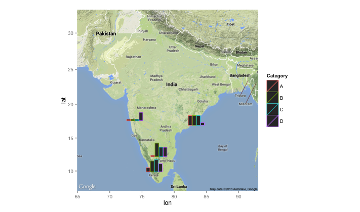

Recently, I was attempting to layer plots created using ggplot onto a map. I came across this example, and it was exactly what I wanted. It produced this plot using a package called ggsubplot

However, after trying to install and use ggsubplot I found out that it has been deprecated for some time (now incompatable with current versions of ggplot2) and has been since removed from CRAN, as detailed here.
Therefore, I found an alternative approach to layer plots made using ggplot onto a map - by employing the googleway package. This takes extra steps - but allows you to add ggplots to googlemaps.
To demonstrate this I will use example data from Yelp - plotting barbers in Manchester, first using markers, then plotting graph showing price and rating information.
Extracting example data
I have used Yelp data for this example, as it is ideal as it has geographic information, along with additional data to create a plot for each location. This was extracted pro grammatically in R using the Yelp API.
In order to use the Yelp API, you need to create an app through their development area. This allows you to create a client id and api key which you can use to extract data.
I create the following function, which relies on the httr and jsonlite packages to extract the data, along with the tidyverse to clean it. It requires 6 inputs:
term - what are you searching for
location - the area where you want to search
limit - how many results do you want to find
radius - radius of the location
client_id - client id key from Yelp
api - api key from Yelp
library(httr)
library(jsonlite)
library(tidyverse)
yelp_search<-function(term,location,limit, radius,client_id,api){
yelp <- "https://api.yelp.com"
url <- modify_url(yelp, path = c("v3", "businesses", "search"),
query = list(term = term, location = location,
limit = limit,
radius = radius))
res <- GET(url, add_headers('Authorization' = paste("bearer", api)))
resTEXT<-httr::content(res, as="text")
JLres<-jsonlite::fromJSON(resTEXT, flatten=TRUE)
BUS<-JLres$businesses
cat_list<-list()
for (i in 1:length(BUS$name)){
categories1<-BUS$categories[[i]] %>%
as.vector()
c2<-as.vector(categories1$title)
c3<-paste0(c2, collapse = ", ")
cat_list[[i]]<-c3
}
c4<-unlist(cat_list)
BUSINESS_DF<-select(BUS,name,rating,review_count,price,phone,
latitude=coordinates.latitude,
longitude=coordinates.longitude,
postcode=location.zip_code)%>%
mutate(categories=c4)%>%
as_tibble()
BUSINESS_DF$price_num<-nchar(BUSINESS_DF$price)
return(BUSINESS_DF)
}In this example we are extracting data for barber shops in Manchester, UK. I filter, only examining the data where there is price information.
term <- "barber"
location <- "Manchester, UK"
limit <- 20
radius <- 8000
#api and client_id are obtained from Yelp developer page
yelp_df <- yelp_search(term,location,limit,radius,client_id,api)%>%
filter(!is.na(price_num))| name | rating | review_count | price | phone | latitude | longitude | postcode | categories | price_num |
|---|---|---|---|---|---|---|---|---|---|
| The Cornershop Barber Shop | 3.5 | 12 | £ | 4.41612e+11 | 53.48280 | -2.234542 | M1 1JF | Barbers | 1 |
| Mr Male Grooming | 5.0 | 6 | £££ | 4.41618e+11 | 53.48012 | -2.253904 | M3 3AQ | Barbers, Hair Salons | 3 |
| Close Male Grooming | 4.5 | 6 | ££ | 4.41612e+11 | 53.48409 | -2.231907 | M4 5AZ | Hair Salons, Barbers | 2 |
| BarberBarber | 3.5 | 9 | £££ | 4.41618e+11 | 53.48281 | -2.246458 | M3 2BW | Barbers | 3 |
| KMC Barbers | 5.0 | 1 | ££ | NA | 53.42315 | -2.183590 | SK4 4NZ | Barbers | 2 |
| Urban Gent Hairdressing | 5.0 | 2 | ££ | 4.47583e+11 | 53.48128 | -2.249401 | M3 2PB | Barbers, Blow Dry/Out Services, Hair Extensions | 2 |
| Maclure Barbers | 3.5 | 6 | £££ | 4.41614e+11 | 53.48315 | -2.235488 | M4 1NB | Barbers | 3 |
| Flanagans | 3.0 | 3 | ££ | 4.41618e+11 | 53.48171 | -2.248858 | M3 2PW | Barbers | 2 |
| Palace Barbers | 3.0 | 3 | £ | 4.47962e+11 | 53.48314 | -2.231941 | M4 1PW | Barbers | 1 |
Map with markers
the first thing that you can do with googleway is to map the data on google maps with markers.
You can include additional information that will appear when you click on the marker. To do this we add an extra column to the dataframe with the info that will appear when you click on the marker. In this case it is the name and rating.
yelp_df$info<-paste0("<b>Name: </b>",yelp_df$name," ",
"<b>Rating: </b>",yelp_df$rating)We then plot this data with googleway. However, before using googleway you need to register with google maps and obtain an api key, details on how to do this are provided here
In this example we refer to the google map api as key.
library(googleway)
library(tidyverse)
set_key(key = key) #key is the api
google_map() %>%
add_markers(
data = yelp_df,
info_window = "info"
)You can also alter the colours of the markers, instructions on how to do this can be found here
Map with plots
To replace the markers with plots, there are a number of steps we have to take:
- Create the plots with
ggplot
- Save plots to a file and create a link for the file
- Re-plot with
googleway
Create the plots
We create the plots with ggplot In this example, I am plotting a bar plot for each firm, with firm rating, number of reviews and price.
The theme is altered to remove text from the plot, and to make the background transparent.
In ggsave the width and height is the size of the plot/file. You might want to adjust to find the most suitable size.
library(tidyverse)
library(reshape2)
for(i in 1:length(yelp_df$name)) {
name_place<-yelp_df$name[[i]]
yp<-select(yelp_df,name,rating,review_count,price_num)%>%
melt()
p <- ggplot(subset(yp, name==name_place),
aes(variable, value, fill = variable)) +
geom_bar(stat="identity", show.legend=FALSE)+
theme(axis.title.x=element_blank(),
axis.text.x=element_blank(),
axis.text.y=element_blank(),
axis.ticks.y=element_blank(),
axis.ticks.x=element_blank(),
axis.title.y=element_blank(),
panel.background = element_rect(fill = "transparent"), # bg of the panel
plot.background = element_rect(fill = "transparent", color = NA), # bg of the plot
panel.grid.major = element_blank(), # get rid of major grid
panel.grid.minor = element_blank(), # get rid of minor grid
legend.background = element_rect(fill = "transparent"), # get rid of legend bg
legend.box.background = element_rect(fill = "transparent") # get rid of legend panel bg
)
file_name<-paste0("figure_",i,"_",name_place,".png")%>%
tolower()%>%
gsub("[[:space:]]", "", .)
ggsave(file_name, p,width=0.6,height=0.3,
bg = "transparent")
}I then create a link to the images. To do this I have created a GitHub repository, where I have saved the images. This allows me to use the following link structure.
path_to_images <-"https://raw.githubusercontent.com/matthewsmith430/vis_image/master/"
for (i in 1:length(yelp_df$name)){
name_place<-yelp_df$name[[i]]
file_name<-paste0("figure_",i,"_",name_place,".png")%>%
tolower()%>%
gsub("[[:space:]]", "", .)
yelp_df$image[i]<-paste0(path_to_images, file_name)
}Add plots to the map
library(googleway)
library(tidyverse)
set_key(key = key) #key is the api
google_map() %>%
add_markers(
data = yelp_df,
marker_icon = "image",
info_window = "info"
)The plots show the number of reviews, price and rating. The colours are:
Green = Review Count
Red = Rating
Blue = Price